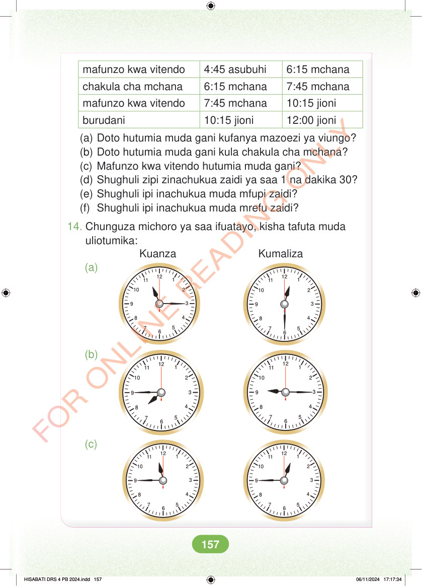

<!DOCTYPE html>
<html lang="sw-TZ"><head><meta charset="utf-8"><meta name="viewport" content="width=device-width,initial-scale=1">
<title>Hisabati: Kitabu cha Mwanafunzi Darasa la Nne</title>
<meta name="title-id" content="pg163_sec001"><meta name="page-section-id" content="171">
<link href="./content/tailwind_output.css" rel="stylesheet"><link href="./assets/libs/fontawesome/css/all.min.css" rel="stylesheet"><link href="./assets/fonts.css" rel="stylesheet">
<style>body{margin:0;background:#eef1ed}main{width:100%;display:flex;justify-content:center;padding:1rem 1rem 5rem;box-sizing:border-box}#content{width:100%;display:flex;justify-content:center}.pdf-page{position:relative;width:min(calc(100vw - 2rem),56rem);aspect-ratio:540.8980102539062/750.6610107421875;background:white;box-shadow:0 4px 24px #0002;overflow:hidden}.pdf-page img{position:absolute;inset:0;width:100%;height:100%;object-fit:fill}</style>
</head><body><main><h1 class="sr-only" id="page-heading">Ukurasa wa 163</h1><div id="content" class="opacity-0"><section role="article" data-section-type="pdf_accessible_page" data-section-id="pg163_sec001" aria-labelledby="page-heading" class="pdf-page"><p class="sr-only" data-id="pg163_gp001_tx001">mafunzo kwa vitendo 4:45 asubuhi 6:15 mchana chakula cha mchana 6:15 mchana 7:45 mchana mafunzo kwa vitendo 7:45 mchana 10:15 jioni burudani 10:15 jioni 12:00 jioni (a) Doto hutumia muda gani kufanya mazoezi ya viungo? (b) Doto hutumia muda gani kula chakula cha mchana? (c) Mafunzo kwa vitendo hutumia muda gani? (d) Shughuli zipi zinachukua zaidi ya saa 1 na dakika 30? (e) Shughuli ipi inachukua muda mfupi zaidi? (f) Shughuli ipi inachukua muda mrefu zaidi? 14. Chunguza michoro ya saa ifuatayo, kisha tafuta muda uliotumika: Kuanza Kumaliza (a) 12 11 12 11 7 6 5 7 6 5 (b) 12 11 12 11 7 6 5 7 6 5 (c) 12 11 12 11 7 6 5 7 6 5 HISABATI DRS 4 PB 2024.indd 157 HISABATI DRS 4 PB 2024.indd 157 06/11/2024 17:17:34 06/11/2024 17:17:34</p></section></div></main><div class="relative z-50" id="interface-container"></div><div class="relative z-50" id="nav-container"></div><script src="./assets/offline-preloader.js"></script><script src="./assets/scorm.js"></script><script src="./assets/base.bundle.local.js"></script></body></html>